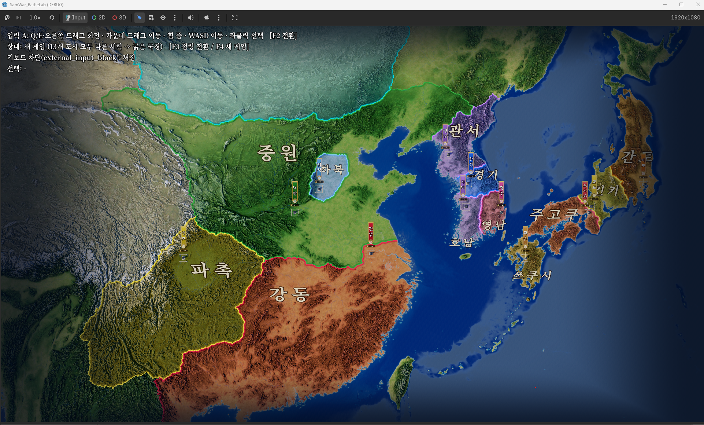
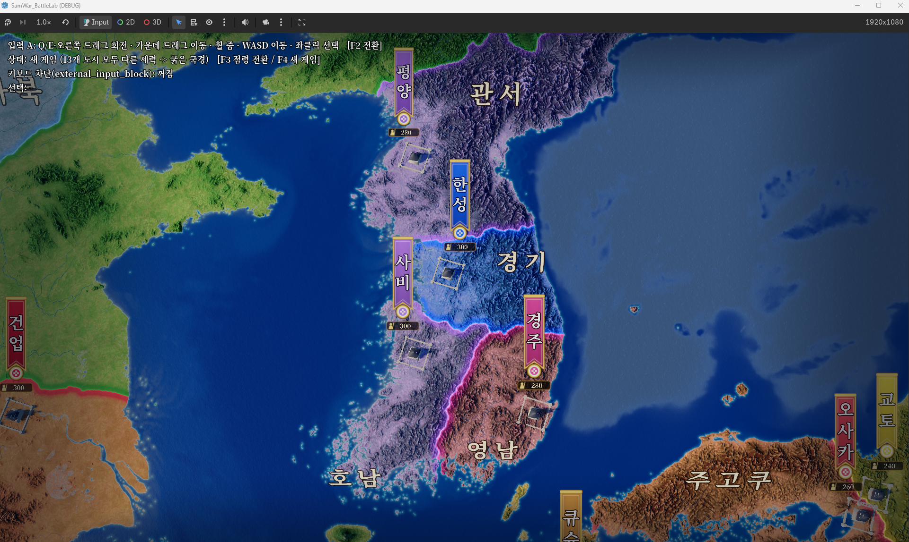
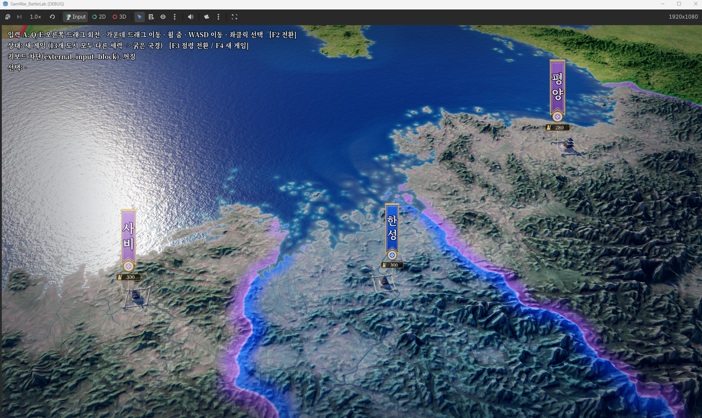
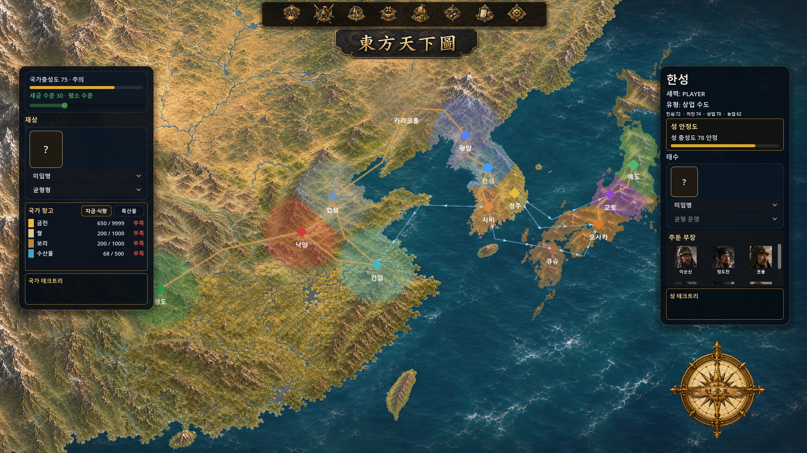
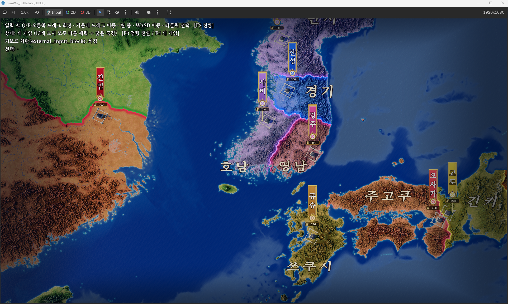

3D 월드맵이 서다
한반도에서 한·중·일로, 기존 2D MVP를 이어받을 무대
2026년 11월 1일 · EASTWAR 3D 월드맵 제작한반도에서 확인했던 3D 지형이 오늘은 중국 대륙과 일본 열도까지 이어졌다. EASTWAR(프로젝트명 삼국WAR)의 월드맵을 한·중·일 전체로 넓히고, 기존 2D MVP에서 쓰던 지역 구성을 새 지도에 옮겼다. 앞서 만들었던 3D 전장에 이어, 이제 그 전투를 둘러싼 세계도 자리를 잡기 시작했다.


기존의 12개 지역을 새 지형 위로
이번 작업에서 중요했던 것은 지도의 범위만 넓히는 일이 아니었다. 한반도 4개, 중국 4개, 일본 4개로 이루어진 기존 12개 지역을 그대로 이어받는 것이었다. 여기에 카라코룸까지 포함해, 이번 시험 장면에서는 모두 13개 도시를 확인했다.
13개 도시의 성과 깃발 표시를 켜고, 한국어 지역 이름도 넣었다. 이름은 지도를 당기거나 멀리 볼 때 줌에 맞춰 나타나고 사라진다. 넓게 보면 지역의 배치가 보이고, 가까이 가면 어느 성과 땅인지 읽을 수 있도록 다듬었다. 지금 화면은 경계를 확인하기 위해 13개 도시를 서로 다른 세력으로 둔 시험용 설정이다.


국경은 산줄기와 강을 따라
지형 위에 올라간 경계도 다시 손봤다. v2.3에서는 직선으로 나뉘던 국경을 산줄기와 강을 따라 구불구불하게 바꿨다. 한반도뿐 아니라 전 지역에 같은 A안을 적용하고, 세력 색은 유지했다. 산과 강이 있는 땅을 나누는 만큼, 경계도 그 땅의 흐름을 따라가게 하고 싶었다.
세력 색은 v3 팔레트로 통일했다. 초나라 항우는 녹색(#2E7D32), 몽골은 청록색(#17B3B0)으로 확정하고 이식 계획서에도 반영했다. 지도를 돌리는 조작은 우클릭 드래그 방식인 입력 A를 기본으로 정했다. 설정에서 B로 바꿀 수 있는 방향도 유지한다.


밖에서 만든 지도를, 프로젝트 안에서 확인하다
오늘은 협업 방식도 정리했다. 록코치(Grok)는 저장소 밖에서 지도와 패치를 만들고, 클코드(Claude Code)는 저장소 안에서 반입과 검증을 맡았다. 클코치(Claude)가 지시와 순서를 정리하니 서로 같은 파일을 동시에 고치지 않으면서 작업을 이어갈 수 있었다. 내가 맡을 일도 지시서 전달, F6 실행 뒤 합격 여부 확인, 마지막 main 병합 승인으로 분명해졌다.
반입 과정에서는 기존 2D 카메라와 이름이 겹치지 않도록 3D 카메라 이름을 바꾸고, Godot이 만드는 임포트 설정 파일을 프로젝트 기준에 맞췄다. 원본 묶음과 129개 파일을 바이트 단위로 대조했을 때 차이는 없었고, 임포트 오류와 클래스 이름 중복도 0건이었다.
자동 검증 환경도 Godot 4.6.2로 맞추고 3D 월드맵 전용 검증을 추가했다. 국경을 고친 v2.3에 이어 성·깃발·지역 이름을 넣은 v2.4 패치까지 작업 브랜치에 반입하고 푸시했다. WorldMap3D 검증과 기존 C-track 검증은 모두 통과했고, 나도 F6로 직접 실행해 합격을 확인했다. 여기까지는 별도 테스트 장면의 확인이며, main과 integration 브랜치는 건드리지 않았다.
작은 전달 규칙도 남겼다. 드라이브 폴더 전체 대신 필요한 조각 파일만 받고, 패치 설명 맨 위에는 기준 커밋을 적는다. 바뀐 파일과 새 파일의 수를 밝히고, 숫자가 도시 하나 기준인지 전체 합계인지도 구분한다. 지도를 잘 만드는 일만큼, 만든 결과를 헷갈리지 않게 넘기는 일도 중요했다.
2D에서 만든 게임을 이어받기 위해
이제 이어갈 작업의 중심은 기존 2D MVP의 화면과 기능이다. 월드맵 위에 있던 HUD, 테크트리, 외교와 첩보, 지역 자원과 국가 정보를 새 3D 지도에 연결하려고 한다. 지금까지 구현한 규칙과 데이터를 살리고, 그 내용을 보여주고 조작하는 지도를 3D로 옮기는 방향이다.


연결 전에 기존 2D 좌표를 읽기 전용으로 점검했고, 그 결과를 이식 계획서에 반영했다. 이때 refresh_tool이 실제 게임에서도 2D 카메라를 덮어쓴다는 점을 바로잡았다. 다음 카메라 연결 단계에서는 이런 동작과 기존 입력이 새 지도에 간섭하지 않도록 처리해야 한다.
순서는 카메라와 연결 어댑터부터 시작한다. 이어 지도에서 대상을 선택하는 기능, 색상 통일, 도로를 붙이고, 전투 진입과 그래픽 메모리 해제까지 확인한 뒤 운영 전환으로 간다. 03부터 08까지의 이 과정은 앞으로 할 일이다. 오늘 지역 구성과 표시를 옮겼다고 해서, HUD와 게임 기능까지 모두 연결된 것은 아니다.
이제 측정하고, 실제 게임으로 연결한다
성능은 별도로 확인할 예정이다. v2.3 때는 크기와 형식이 같은 국경 텍스처 두 장만 바뀌어 다시 측정하지 않았다. 이제 성과 깃발을 켠 상태와 끈 상태를 나누고, d3d12와 Vulkan 두 렌더링 경로에서 FPS와 VRAM을 재기로 했다. 오늘 기록에는 이 측정 결과가 아직 없다. 기존 2D 카메라의 키보드 입력을 막는 가드 작업도 밤샘 작업 묶음에 넣어 결과를 기다리고 있다.


한반도에서 가능성을 확인한 지도가 한·중·일 전체로 넓어졌고, 내가 직접 실행해 볼 수 있는 프로젝트 안에 들어왔다. 이제는 이 땅 위에서 기존 게임이 돌아가게 만드는 차례다. 전장의 3D화에 이어 월드맵도 서기 시작했다. 오늘은 그 다음 작업을 이어갈 무대를 마련한 날로 남기고 싶다.